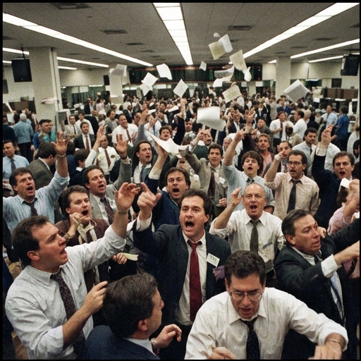
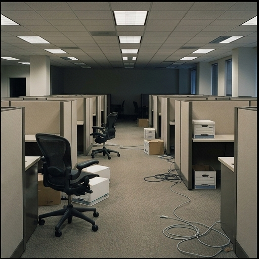
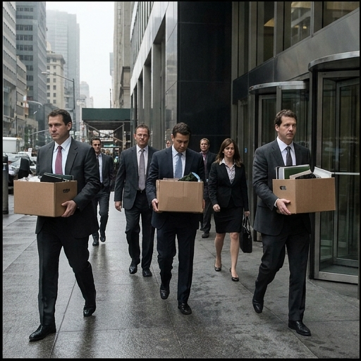
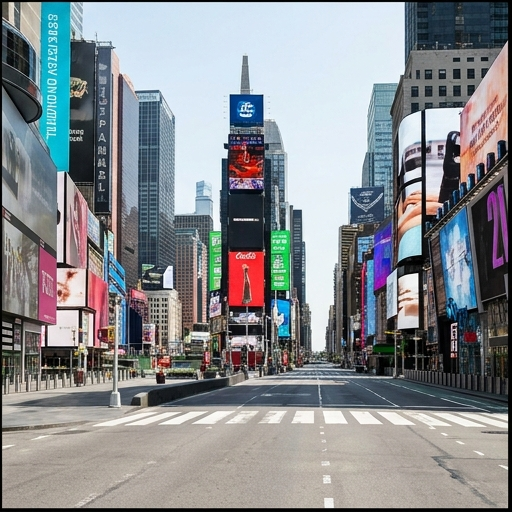

A Short History of Crashes
1987
Black Monday
−22.6% in one day
DOW JONES INDUSTRIAL
DOW JONES INDUSTRIAL

NYSE · OCT 19, 1987
2000
Dot-com Bust
−78% over 30 months
NASDAQ COMPOSITE
NASDAQ COMPOSITE

SILICON VALLEY · 2001
2008
Financial Crisis
−57% peak to trough
S&P 500
S&P 500

WALL ST · SEP 15, 2008
2020
COVID Crash
−34% in 33 days
S&P 500
S&P 500

TIMES SQUARE · MAR 2020
100% Recovery
Every one.
Markets always came back.